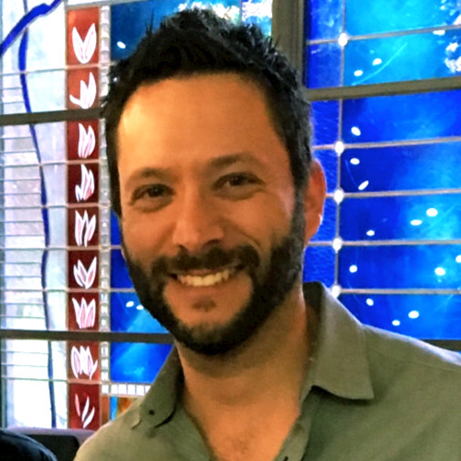
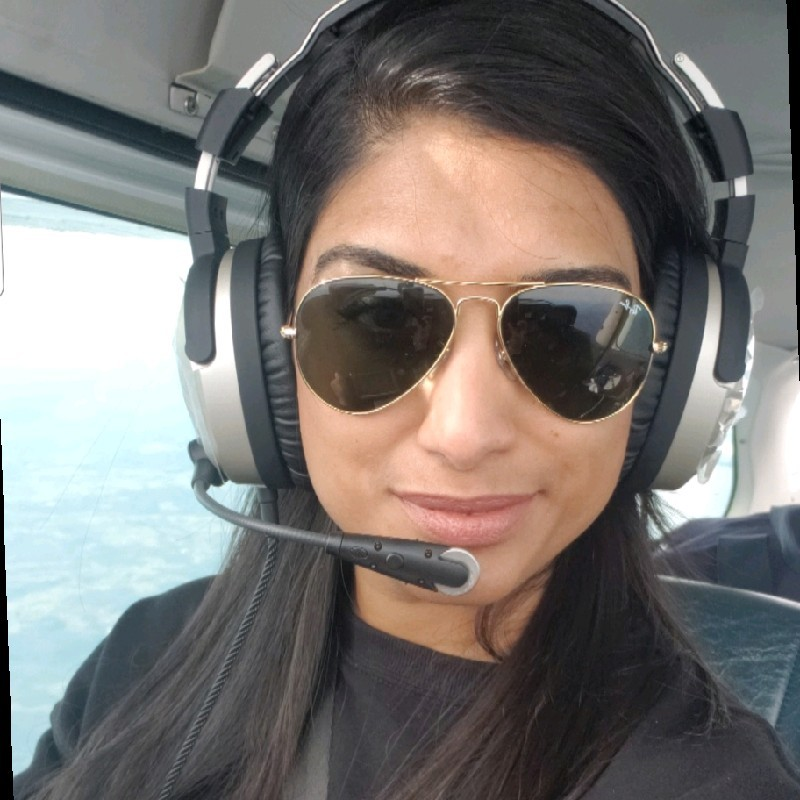

A conversation with two doctors who are accomplished beyond the realms of the medical field and their life journey
Its a mix of conversations with Dr. Mark Benaroia, MD, MHSc, FRCPC, Director Home Hemodialysis, Grand River Hospital, Co-Founder and Principal of FirstHx Inc. who gives a picture about how to take life as it comes and Dr. Ana Macedo, a medical doctor currently, making a switch into User Experience Design
A conversation with pilots Afshan David and Evan R on how they got their aviation careers flying and what they accomplished prior to that.
Afshan was in the banking sector for a while before she started flying and Evan had a sound career as a consultant before taking the plunge into flying professionally.
